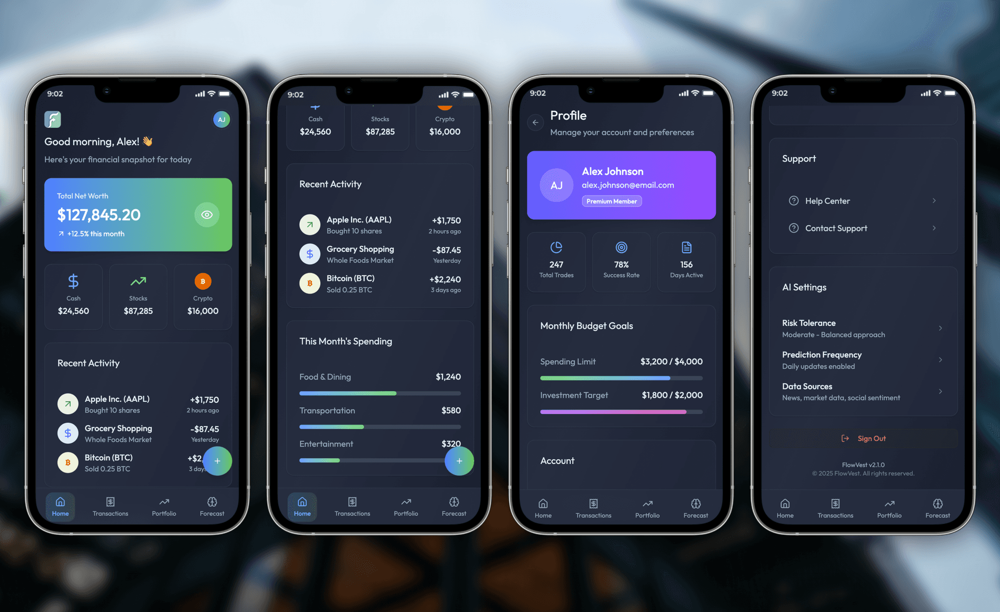
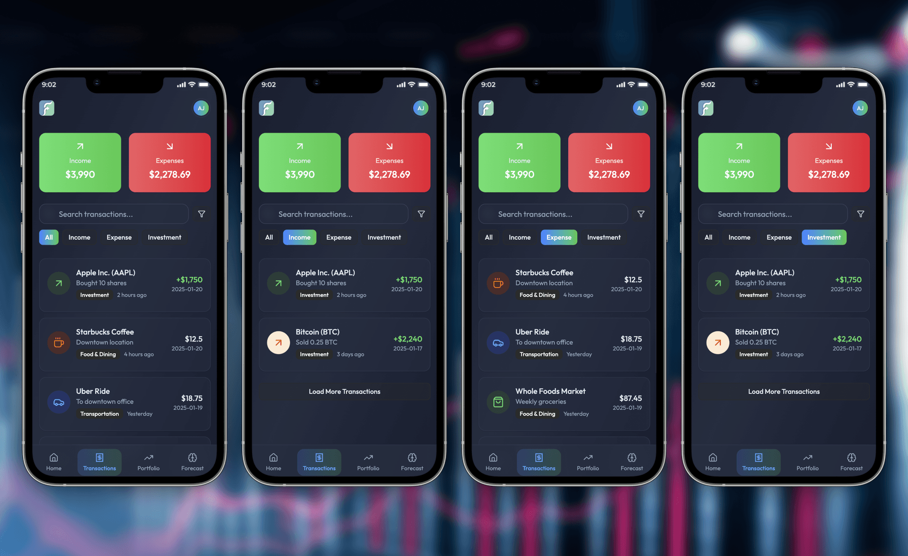
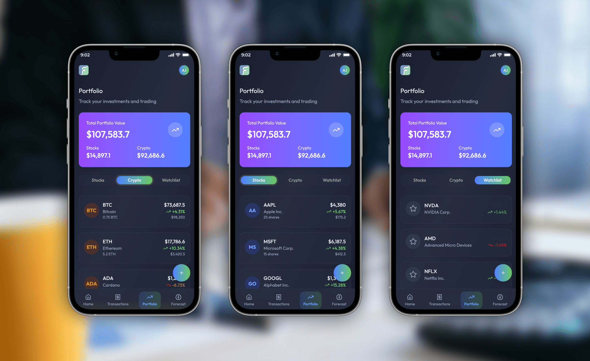
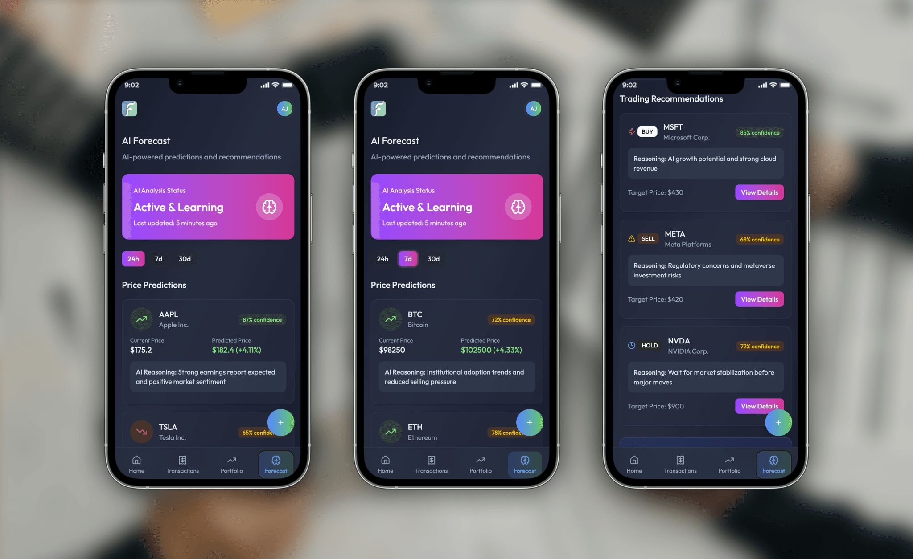
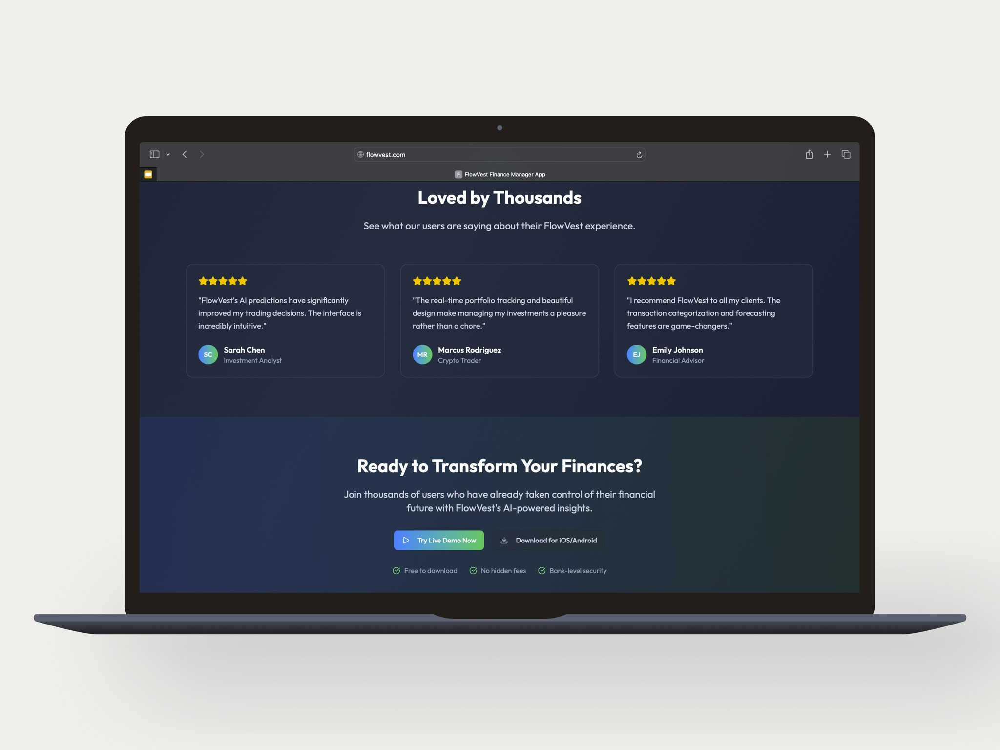

Several years ago, I did freelance design for a bank and finance management company, creating a mobile app focused on managing personal transactions and investments. Recently, I revisited that work, leveraging today’s technologies and design trends. The opportunity to integrate AI for smarter financial analysis and recommendations inspired me to reimagine the app, now called FlowVest. My objective was to solve old usability pain points while elevating user experience for a new generation of finance app users.





Personas
1. Olivia – The Pragmatic Saver (28, Marketing Professional)
- Manages day-to-day expenses, tracks purchases, and aims to save for travel and big purchases.
- Wants a straightforward mobile overview of spending, savings, and recommendations to optimize budgets.
- Finds traditional finance apps cluttered or “too technical.”
2. Raj – The Investing Explorer (40, Small Business Owner)
- Active in stock and crypto trading, needs real-time insights and easy management of his portfolio.
- Seeks timely trade recommendations and performance analytics without sifting through financial jargon.
- Finds fragmented tools across banks, brokerages, and wallets confusing.
3. Liam – The Early Adopter (23, Graduate Student)
- Familiar with mobile wallets and fintech apps, wants to monitor transactions and learn how to invest.
- Open to AI-driven forecasts and tips for stocks and crypto.
- Difficulties understanding predictions or knowing when to trust an app’s advice.
Competitive Analysis & Pain Points
Existing Apps:
- Mint: Great for categorizing spending, but lacks investment tracking and actionable AI insights. Overwhelming initial setup, and charts can feel dense.
- Revolut: Combines banking, stocks, and crypto, but users report slow onboarding, confusing trade flows, and impersonal dashboard.
- Robinhood: Clean interface and instant trades; weak budgeting, and crypto features are separated from stocks. Trade tips and AI insights remain limited.
- Coinbase: Simple crypto UI, but little personalization; reports of high notification spam and difficulty understanding market moves.
Identified Pain Points:
- Complicated onboarding and account connection processes.
- Lack of consolidated overview—users must jump between tabs for finance, stocks, crypto.
- Overuse of bright colors leading to eye fatigue; design feels “in your face.”
- Charts and reporting overwhelm non-technical users.
- Inadequate context or rationale behind recommendations (“Why should I buy this?”).
- Too many irrelevant notifications.
- Security concerns around connecting financial accounts.
User Problems to Solve
- Users want a holistic dashboard for all assets—cash, stocks, crypto—without switching apps.
- Need for quick, clear transaction logs and simple budgeting tools.
- Desire for actionable trade insights and forecasts, not just raw data.
- Preference for visual calm and a gentle color palette to reduce cognitive load for frequent or long sessions.
- Need for trust: context and transparency on AI predictions and privacy.
- Demand for real-time, relevant notifications without spam.
Core User Flows
Onboarding & Account Linking
- User downloads FlowVest and registers account.
- Guided onboarding to securely connect bank, brokerage, and wallet accounts.
- Simple privacy summary and selectable notification preferences.
Unified Financial Dashboard
- After login, user lands on a personalized home screen, showing total balances, net worth, recent transactions, and summary cards for stocks/crypto.
- Color-coded cards indicate daily/weekly asset changes—pastel blues, mint greens, gentle neutrals.
- Tap any card for deeper details: spending trends, asset breakdown.
Transactions Review
- User navigates to Transactions tab for detailed and filtered log.
- Can tag, categorize, and search transactions.
- Expenses chart gently highlights big outflows; individual items always editable.
Portfolio Management
- Portfolio tab displays owned stocks and crypto with real-time prices, sparkline charts, allocations, and overall performance.
- Tap any asset for granular history and simple buy/sell UI.
- Add assets to watchlist for easy monitoring.
Forecast AI & Recommendations
- Forecast tab presents market predictions, confidence levels, and tailored trade moves.
- Recommendations are explained clearly (e.g., “AI suggests buying Ethereum due to bullish sentiment and recent volume spikes”).
- User can set risk profile for more personalized forecasts.
- Recommendations always accompanied by rationale and impact summary.
Insights & Reports
- Rich progress reports visualize spending, income, investments, and forecasts for custom time ranges.
- Gentle, modern charts make trends evident at a glance.
Profile & Settings
- User customizes notification settings, theme (light/pastel or soft dark mode), security login, and account sync.
- AI preferences allow audit of data used for training.
Outcome
FlowVest addresses common pain points found in legacy finance apps while capitalizing on AI-driven forecasting and recommendation features. The app’s soft color palette promotes comfort during extended use, and transparent AI tips empower confident financial decisions for all experience levels. By thoughtfully integrating modern tech and design, FlowVest provides holistic, actionable finance management with visual calm and clarity at every step.